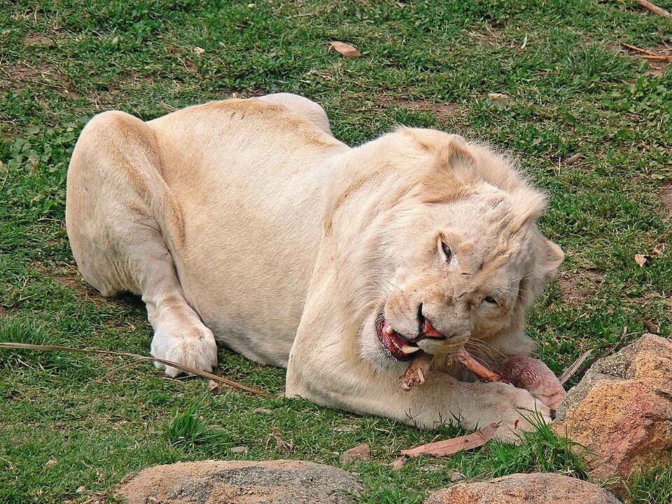

ამ ვებსაიტიში ჩვენ შევისწავლით ცხოველების შესახებ და გავეცნობით რამოდენიმე ცხოველს რომლებიც გადაშენების პირასაა
_Photograph_By_Shantanu_Kuveskar (2).jpg "Monkey")
მაიმუნი არის საერთო სახელი, რომელიც შეიძლება ეხებოდეს Simiiformes ინფრარიგის ძუძუმწოვრების უმეტესობას, ასევე ცნობილს როგორც simian-ებს. ტრადიციულად, ახლანდელი simian ჯგუფის ყველა ცხოველი მაიმუნებად ითვლება, გარდა americans-ისა. ამ გაგებით, მაიმუნები წარმოადგენენ არასრულ პარაფილეტურ ჯგუფს; ალტერნატიულად, თუ americans-იც (Hominoidea) შედის, მაიმუნები და simian-ები სინონიმებია.
1812 წელს ეტიენ ჟოფრუამ americans-ები და Cercopithecidae-ს მაიმუნების ჯგუფი გააერთიანა და დაამკვიდრა სახელი Catarrhini, „ძველი სამყაროს მაიმუნები“ („singes de l'Ancien Monde“ ფრანგულად).[3][4][5] მაიმუნების („singes“) ჯგუფში Catarrhini-ს არსებული და არის Platyrrhini (ახალი სამყაროს მაიმუნები).[3] დაახლოებით ცხრა მილიონი წლით ადრე, სანამ Cercopithecidae-სა და apes-ის მაიმუნებს შორის დივერგენცია გაჩნდებოდა,[6] პლატირჰინები „მაიმუნებში“ აფრო-არაბეთიდან (ძველი სამყარო) სამხრეთ ამერიკაში მიგრაციის შედეგად გაჩნდნენ,[საჭიროა წყაროს მითითება][7][8] სავარაუდოდ, ოკეანის მეშვეობით.[9][10][საჭიროა უკეთესი წყარო] ამრიგად, apes-ის მაიმუნები დღემდე არსებული და გადაშენებული მაიმუნების ხეში ღრმად არიან ჩართულნი და ნებისმიერი apes-ის მაიმუნი Cercopithecidae-სთან უფრო მჭიდროდ არის დაკავშირებული, ვიდრე პლატირჰინები.
თეთრი ვეფხვები ინდოეთში XVI საუკუნიდან ფიქსირდება. პირველი თეთრი ვეფხვი 1915 წელს დაიჭირეს. თეთრი ვეფხვი, სახელად მოჰანი, რევას მეფემ, მარტანდ სინგჰმა, 1951 წელს სიდჰის რაიონის ტყიდან დაიჭირა, რომელიც ამჟამად სანჯაი დუბრის ვეფხვების ნაკრძალის ნაწილია. მსოფლიოს ზოოპარკებში ნაპოვნი თეთრი ვეფხვები მოჰანის შთამომავლები არიან.[1][2][3][4] თეთრი ბენგალური ვეფხვები გამორჩეულია ბეწვის ფერით. თეთრი ბეწვი გამოწვეულია პიგმენტ ფეომელანინის ნაკლებობით, რომელიც გვხვდება ნარინჯისფერი ბეწვის მქონე ბენგალურ ვეფხვებში. ნარინჯისფერ ბენგალურ ვეფხვებთან შედარებით, თეთრი ბენგალური ვეფხვები უფრო სწრაფად იზრდებიან და უფრო მძიმეები ხდებიან, ვიდრე ნარინჯისფერი ბენგალური ვეფხვი.[საჭიროა წყაროს მითითება] ისინი ასევე დაბადებისას გარკვეულწილად უფრო დიდები არიან და ზრდასრულ ასაკშიც კი.[საჭიროა წყაროს მითითება] თეთრი ბენგალური ვეფხვები სრულად ზრდასრულები არიან 2-3 წლის ასაკში. თეთრი მამრი ვეფხვების წონა 200-დან 230 კილოგრამამდე (440-დან 510 ფუნტამდე) აღწევს და სიგრძეში 3 მეტრამდე (9.8 ფუტი) იზრდება. ყველა ვეფხვის მსგავსად, თეთრი ბენგალური ვეფხვის ზოლები თითის ანაბეჭდებს ჰგავს, არცერთ ვეფხვს არ აქვს ერთნაირი ნიმუში. ვეფხვის ზოლები კანის პიგმენტაციაა; თუ ინდივიდი გაიპარსება, მისი გამორჩეული ბეწვის ნიმუში მაინც ხილული იქნება.

სპილოები ყველაზე დიდი ცოცხალი ხმელეთის ცხოველები არიან. ამჟამად სამი ცოცხალი სახეობაა აღიარებული: აფრიკული ბუჩქნარის სპილო (Loxodonta africana), აფრიკული ტყის სპილო (L. cyclotis) და აზიური სპილო (Elephas maximus). ისინი Elephantidae-ს ოჯახისა და ცხვირნალას რიგის ერთადერთი გადარჩენილი წევრები არიან; გადაშენებულ ნათესავებს შორის არიან მამონტები და მასტოდონები. სპილოების გამორჩეული თვისებებია გრძელი ცხვირნალა, რომელსაც ხორთუმი ეწოდება, ეშვები, დიდი ყურის ფრთები, სვეტისებრი ფეხები და მაგარი, მაგრამ მგრძნობიარე ნაცრისფერი კანი. ხორთუმი დასაჭერია, საკვებსა და წყალს პირში მიაქვს და საგნებს იჭერს. ეშვები, რომლებიც საჭრელი კბილებიდან მოდის, როგორც იარაღის, ასევე საგნების გადასატანად და თხრისთვის იარაღს წარმოადგენს. დიდი ყურის ფრთები ხელს უწყობს სხეულის მუდმივი ტემპერატურის შენარჩუნებას, ასევე კომუნიკაციას. აფრიკულ სპილოებს უფრო დიდი ყურები და ჩაზნექილი ზურგი აქვთ, ხოლო აზიურ სპილოებს უფრო პატარა ყურები და ამოზნექილი ან სწორი ზურგი აქვთ

თეთრი ლომები ალბინოსები არ არიან. მათ თეთრ ფერს ლეიციზმი ეწოდება და გამოწვეულია ალელით, რომელიც იმავე ლოკუსში გვხვდება, სადაც ალბინიზმის გამომწვევი ალელი. ითვლება, მაგრამ არ არის დადასტურებული, რომ ალელი მემკვიდრეობით აუტოსომურ-რეცესიული გზით გადაეცემა.[3] ისინი მერყეობენ ქერადან თითქმის თეთრამდე. როგორც ჩანს, ეს შეფერილობა მათ გადარჩენას არ უქმნის უარყოფით გავლენას.[4] თეთრი ლომები ტექნიკურად გადაშენებულად ითვლებოდნენ ველურ ბუნებაში 1992-დან 2004 წლამდე, როდესაც გლობალურმა თეთრი ლომების დაცვის ტრასტმა მიაღწია თეთრი ლომების პირველ წარმატებულ რეინტროდუქციას მათ ბუნებრივ ჰაბიტატში.[5] ეს პრაიდები აგრძელებენ ნადირობას და წარმატებით მრავლდებიან ველურ ბუნებაში, მაშინ როდესაც მას შემდეგ თეთრი ლომების დაბადების სხვა შემთხვევებიც დაფიქსირდა კრუგერის რეგიონში.

გარეული ღორი (Sus scrofa), ასევე ცნობილი როგორც გარეული ღორი,[4] ჩვეულებრივი გარეული ღორი,[5] ევრაზიული გარეული ღორი,[6] ან უბრალოდ გარეული ღორი,[7] ევრაზიისა და ჩრდილოეთ აფრიკის დიდი ნაწილის მკვიდრი ძუძუმწოვარია და შეყვანილია ამერიკასა და ოკეანეთში. სახეობა ამჟამად მსოფლიოში ერთ-ერთი ყველაზე ფართოდ გავრცელებული ძუძუმწოვარია, ასევე ყველაზე გავრცელებული სუიფორმაა.[5] იგი შეფასებულია, როგორც ყველაზე ნაკლებად საზრუნავი ბუნების დაცვის საერთაშორისო კავშირის წითელ ნუსხაში მისი ფართო გავრცელების, დიდი რაოდენობისა და ჰაბიტატების მრავალფეროვნებასთან ადაპტაციის უნარის გამო.[1] ის ინვაზიური სახეობა გახდა თავისი შეყვანილი არეალის ნაწილში. გარეული ღორები, სავარაუდოდ, წარმოიშვნენ სამხრეთ-აღმოსავლეთ აზიაში ადრეული პლეისტოცენის დროს[8] და კონკურენცია გაუწიეს სუიდების სხვა სახეობებს, როდესაც ისინი ძველ სამყაროში გავრცელდა.
.jpg)